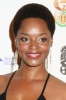

Country:United States, 121 minutes
Spoken languages:
Genres:Horror, Action
Director(s):Stephen Norrington
Writer(s):David S. Goyer
Video Codec:Unknown
Number: 1057


Certification:R
Storyline:
The Daywalker known as "Blade" - a half-vampire, half-mortal man - becomes the protector of humanity against an underground army of vampires.
Cast: 

Medium: Original DVD,
Loaned: No
Aspect ratio: Unknown